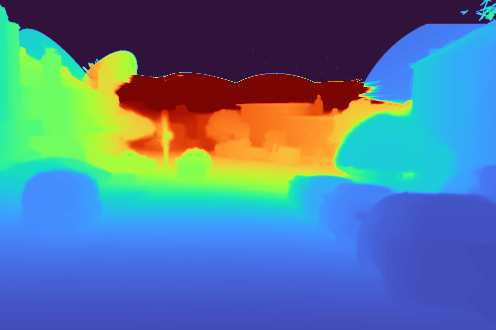
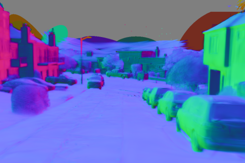

3DGS and 2DGS Scene Reconstruction and Relighting
Scene Reconstruction and Relighting with Three-Dimensional and Two-Dimensional Gaussian Splatting
Reconstructing surfaces.
Exploring light.
We study how images, depth estimation, normal estimation, and laser-scanned geometry can work together to reconstruct outdoor scenes. Our goal is to align Gaussian representations with scene surfaces and understand how geometry and materials shape their appearance under changing illumination.
- Combine visual and geometric cues for scene reconstruction.
- Refine surface structure through joint image, depth, and normal supervision.
- Explore relighting and diagnose geometry-induced shadow artifacts.
Interactive Explorer
Explore scene appearance, surface geometry, and lighting.
Captured images (left) and reconstructed appearance (right). Use the video controls to inspect the sequence.


Intermediate outputs reveal surface structure beyond the final image. Colors in the normal map represent orientation, not material color.
Recorded relighting of the reconstructed scene.
These are recorded research examples, not a live renderer or a controlled comparison between Gaussian representations. Surface and shadow artifacts remain under investigation.